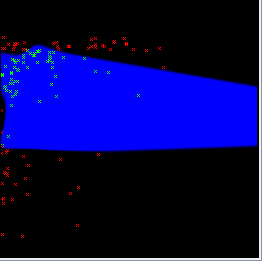
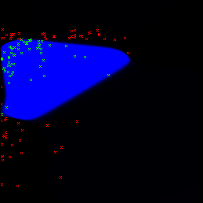
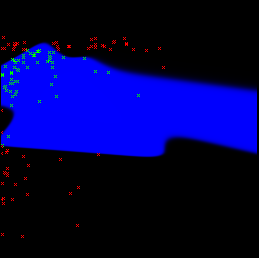

Current version: 0.1 Developer(s): Alex Oshika Avilla, Fabricio Augusto Rodrigues
Accepts categorical maps: no
Needs absence points: no
Author(s): Chopra, Paras, modified by Alex Oshika Avilla and Fabrício Augusto Rodrigues
An artificial neural network (ANN), also called a simulated neural network (SNN) or commonly just neural network (NN), is an interconnected group of artificial neurons that uses a mathematical or computational model for information processing based on a connectionistic approach to computation. In most cases an ANN is an adaptive system that changes its structure based on external or internal information that flows through the network. In more practical terms, neural networks are non-linear statistical data modeling or decision making tools. They can be used to model complex relationships between inputs and outputs or to find patterns in data. Content retrieved from Wikipedia on the 06th of May, 2008: http://en.wikipedia.org/wiki/Neural_network
Data type: Integer Domain: [1, oo) Typical value: 8
Meaning: Number of neurons in the hidden layer (additional layer to the input and output layers, not connected externally).
Data type: Real Domain: 0, Typical value: 0.3
Meaning: Learning Rate. Training parameter that controls the size of weight and bias changes during learning.
Data type: Real Domain: 0, Typical value: 0.05
Meaning: Momentum simply adds a fraction m of the previous weight update to the current one. The momentum parameter is used to prevent the system from converging to a local minimum or saddle point. A high momentum parameter can also help to increase the speed of convergence of the system. However, setting the momentum parameter too high can create a risk of overshooting the minimum, which can cause the system to become unstable. A momentum coefficient that is too low cannot reliably avoid local minima, and can also slow down the training of the system.
Data type: Integer Domain: 0, Typical value: 1
Meaning: 0 = train by epoch, 1 = train by minimum error
Data type: Integer Domain: [1, oo) Typical value: 5000000
Meaning: Determines when training will stop once the number of iterations exceeds epochs. When training by minimum error, this represents the maximum number of iterations.
Data type: Real Domain: 0, Typical value: 0.01
Meaning: Minimum mean square error of the epoch. Square root of the sum of squared differences between the network targets and actual outputs divided by number of patterns (only for training by minimum error).
The following images show models in the environmental space (temperature x precipitation) generated with the same input (Furcata boliviana localities dataset) by the Artificial Neural Networks algorithm (training by epochs). Green dots are presence points, red dots are pseudo-absences generated outside the respective bioclim model. The different models reflect the non-deterministic nature of the algorithm:
|  |
| fig. 1: ANN model 1 with default parameters |
|  |
| fig. 2: ANN model 2 with default parameters |
|  |
| fig. 3: ANN model 3 with default parameters |